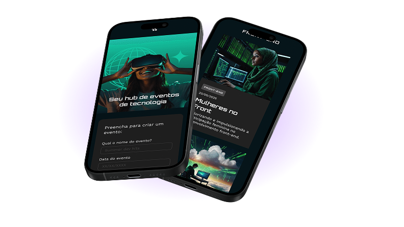

Fique de olho teste2
no que importa
Monitoramento em tempo real com alertas inteligentes para sua aplicação nunca sair do ar sem você saber.
Testar versão demo
Monitoramento em tempo real com alertas inteligentes para sua aplicação nunca sair do ar sem você saber.
Testar versão demo